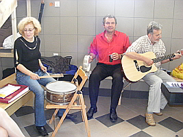

Dyrygent chóru Camerata
Co tu dużo pisać, wystarczy popatrzeć...
Występowała w prestiżowych salach wielu krajów Europy (Anglia, Francja, Belgia, Hiszpania, Włochy, Szwajcaria, Niemcy, Ukraina, Litwa, Czechy) i Polski, m. in. na Zamku Królewskim w Warszawie i Krakowie (cykl „Wieczory Wawelskie”). Brała udział w licznych Festiwalach Muzyki Dawnej w Polsce i Francji (Auvergne Barocca).
Jest dyrygentem wielickiego chóru mieszanego Camerata oraz chórów szkolnych, z którymi zdobyła wiele nagród.

W czasie warsztatów.
Kobieta tryskająca humorem i energią, ale śrubę też potrafi przykręcić, jak trzeba ćwiczyć. A tak naprawdę, to wspaniale, bezstresowo się z nią pracuje.
Izabela Szota prowadzi chór Camerata Wieliczka od 1999 roku.
Nasza dyrygentka specjalizuje się w wykonawstwie muzyki epoki baroku. Jej bogaty repertuar obejmuje partie oratoryjne, operowe (m. in. prapremiera opery-intermezza „Larinda e Vanesio” J.A.Hassego), a także operetkowe, musicalowe i pieśni.Izabela Szota ukończyła z wyróżnieniem Akademię Muzyczną w Krakowie (specjalności: pedagogiczna oraz dyrygowanie zespołami wokalno - instrumentalnymi), a także klasę śpiewu profesor Teresy Wessely. Była stypendystką Ministra Kultury i Sztuki.
Jako solistka, kameralistka oraz dyrygent prowadzi ożywioną działalność koncertową w Polsce i wielu krajach Europy. Współpracowała z wieloma solistami m. in. Opery Krakowskiej oraz zespołami (Krakowski Chór Kameralny, Orfeo 5, Pro Arte, Camerata Cracovia, Chór Polskiego Radia w Krakowie, Kwartet św. Stanisława), a także z teatrem dramatycznym Bückleina w Krakowie.Występowała w prestiżowych salach wielu krajów Europy (Anglia, Francja, Belgia, Hiszpania, Włochy, Szwajcaria, Niemcy, Ukraina, Litwa, Czechy) i Polski, m. in. na Zamku Królewskim w Warszawie i Krakowie (cykl „Wieczory Wawelskie”). Brała udział w licznych Festiwalach Muzyki Dawnej w Polsce i Francji (Auvergne Barocca).
Posiada w dorobku nagrania TV i CD.
Prowadzi również działalność pedagogiczną. W latach 2000 - 2006 była dyrektorem Szkoły Muzycznej I stopnia przy SOSW dla Dzieci Niewidomych i Słabowidzących w Krakowie, w roku 2006 została dyrektorem nowo powstałej Szkoły Muzycznej I stopnia w Wieliczce, którą nadal prowadzi.Jest dyrygentem wielickiego chóru mieszanego Camerata oraz chórów szkolnych, z którymi zdobyła wiele nagród.

© Stowarzyszenie Muzyczne Chór Camerata Wieliczka
Projekt i wykonanie:  Prowadzenie strony: Małgorzata Wysocka-Cebula
Prowadzenie strony: Małgorzata Wysocka-Cebula